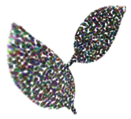
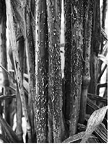
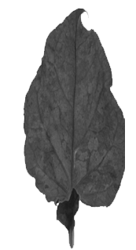

You must have observed a number of plants and animals in your surroundings. But do you know that there are certain organisms present in our surroundings, which are not visible to us? Living organisms which are not visible to the naked eye are known as micro-organisms.
Let us explore micro-organisms in detail by performing a simple activity.
Place a moist piece of bread near your window for a day. Observe the bread using a magnifying glass the next day. You will observe many small, black round structures growing on it. These structures are micro-organisms.
What does this observation suggest?
The observation suggests that micro-organisms are present everywhere-in water, air, and soil. In fact, micro-organisms can survive under all types of environment. They are found in different environments, ranging from icy cold mountains to hot springs, and from deserts to marshy lands. Some micro-organisms are also found living on, or inside the body of other organisms including humans.
Do you know that scientists have discovered a bacterium living at a depth greater than 10000 metres in the sea?
Microbes outnumber all other species and make up most living matter.
Microbes generate at least half the oxygen we breathe.
Do you know which organisms are classified as microorganisms?
Let us find out.
Microorganisms can be classified into four major groups depending on their characteristics. Let us study the major groups of microorganisms.
Viruses are also types of microorganisms, but they cannot reproduce on their own and require a host cell to complete their life cycle. They are responsible for causing a number of diseases in humans such as polio and chicken pox.
Do you know that micro-organisms are used to prepare a number of food items we consume?
Let us explore the use of micro-organisms in the preparation of food.
You must have seen your mother preparing curd by adding a small amount of curd to warm milk an keeping it to set the whole night.
What do you think the small amount of curd contains, which helps in the preparation of curd from milk?
Curd contains several micro-organisms like the bacterium Lactobacillus , which promotes the formation of curd.
It multiplies in milk and converts it to curd.
Bacteria are also used in the preparation of cheese, pickles, and many other food items
But how are micro-organisms useful in the preparation of bread?
Let us find out by performing this simple activity.
Take \( \frac{1}{2} \) kg of maida and add some sugar to it. Mix it with warm water and add a small amount of yeast powder to the mixture.
Knead the maida to make soft dough. Keep the maida aside and record your observation after two hours. You will notice that maida has risen and has become fluffy.
Do you know the reason behind the fluffiness of Maida?
This happens because yeast added to maida reproduces rapidly, and produces carbon dioxide gas while respiring. This gas fills the dough and increases its volume making it to rise.
Based on this principle, yeast (which is a micro-organism) is used in the preparation of breads and cakes. It helps in making them spongy.
Micro-organisms are used commercially to prepare alcohol, wine, and vinegar. Yeast is the most common micro-organism, which is used to prepare alcohol and wine. Let us find out how yeast takes part in the production of alcohol. During the preparation of alcohol, yeast is grown on natural sugars present in grains like rice, wheat, barley, or crushed fruit juices. Yeast breakdowns the sugar present in these grains into alcohol, leading to the large-scale production of alcohol. This process of conversion of sugar into alcohol is known as fermentation .
You know that micro-organisms cause diseases, but do you know that some micro-organisms are also used to prevent diseases? Let us explore.
You must have consumed antibiotics when you were ill. What do you think are antibiotics?
Antibiotics are medicines which are obtained from certain micro-organisms. They kill, or stop the growth of other disease causing micro-organisms. Thus, they are useful for humans.
Antibiotics are currently being obtained from certain bacteria and fungi. Streptomycin, tetracycline, penicillin, and erythromycin are a few examples of the commonly used antibiotics.
Apart from treating human diseases, antibiotics are also mixed with livestock and poultry food to check the spread of microbial infection among farm animals.
Penicillin was the first antibiotic discovered. Scottish scientist, Alexander Fleming, discovered the drug in 1928.
Do you know that proper use of antibiotics can stop the infection and save lives, while improper use of it can be more harmful than help ful?
Therefore, knowing when and when not to take antibiotics is all too important.
You must have been given injections to protect yourself against several diseases when you were young. These injections are called vaccines . But what do you think these vaccines contain? Vaccines are the dead or weakened micro-organisms, which help the body fight against diseases. Let us find out how.
Our body reacts to infection by micro-organisms by producing certain substances called antibodies . These antibodies kill the invading micro-organisms freeing the body from diseases. So, in order to protect the body from diseases caused by micro-organisms, some dead or weakened microbes are introduced in the body, which cause the production of antibodies. These antibodies then remain in the body for a long period of time protecting the body from diseases. This whole process of introducing vaccines into the body is known as vaccination .
Vaccines are available for a large number of diseases like cholera, tuberculosis, small pox, hepatitis, chicken pox, polio etc. Therefore, vaccines are another medium through which micro-organisms are used to treat diseases in humans and other animals.
Polio vaccine is cultured on kidneys of monkeys and cells of aborted foetuses
Rubella, chickenpox, and hepatitis A vaccines are cultured on cells of aborted foetuses.
Do you know that some bacteria help in increasing soil fertility?
There are some bacteria and blue-green algae, which fix the atmospheric nitrogen into soil and thereby, increase the fertility of soil. They are known as biological nitrogen fixers .
One such bacterium is Rhizobium, which is found in the root nodules of leguminous plants like pulses. It lives in symbiotic association with plants and fixes the atmospheric nitrogen in leguminous plants. Micro-organisms not only increase soil fertility, but also help in recycling matter within the ecosystem, and thus help in cleaning the environment. Let us understand how micro-organisms take part in recycling matter by taking a look at the nitrogen cycle.
You know that our atmosphere contains 78% of nitrogen. But all this nitrogen cannot be taken up directly by plants and animals. As studied earlier, certain bacteria and blue-green algae fix the atmospheric nitrogen into soil and convert it into compounds of nitrogen. Rhizobium is one such bacterium which does this. It converts the atmospheric nitrogen into usable form, which is then taken up by plants through their roots. This nitrogen is then utilized by plants to synthesise proteins and other such compounds. Nitrogen is then transferred to animals in the form of proteins when they feed on plants.
But how does this nitrogen reach back into the atmosphere? When plants and animals die, micro-organisms like bacteria and fungi present in soil convert nitrogen present in dead organisms into nitrogenous compounds by the process of decomposition , which can be used by plants again. Some micro-organisms convert these compounds into nitrogen gas, which goes back into the atmosphere. Therefore, micro-organisms help the nitrogen cycle to continue and maintain the percentage of nitrogen present in the atmosphere.
You know that micro-organisms are useful to us in a number of ways, but do you know that not all micro-organisms are useful? There are some micro-organisms which are harmful to human beings and other organisms.
Micro-organisms which cause diseases in plants, humans, and other animals are known as pathogens . Let us explore about them in detail.
The diseases which can spread from one person to another through air, water, or contact are known as communicable diseases . These diseases include cholera, common cold, tuberculosis, chicken pox etc.
We discussed earlier that carriers are insects and animals, which carry disease causing micro-organisms. But how do they do this? You must have noticed your mother covering food items to prevent flies from sitting on it. This is so because flies are carriers of a number of diseases. When they sit on garbage, many pathogens get stuck to their body. When they sit on uncovered food, these pathogens get transferred to the food item. Consuming this contaminated food can result in the occurrence of several diseases. Similarly, a mosquito carrying the parasite of malaria transfers the parasite into the human body when it bites a human.
What measures can be undertaken to prevent the occurrence of communicable diseases and diseases caused by pathogens in humans? Preventive measures like drinking boiled water, keeping food covered, isolating a diseased person from a healthy person, providing vaccination etc. can be undertaken to prevent the occurrence of communicable diseases in humans.
Spread of malaria can be prevented by not allowing mosquitoes to breed in our surroundings. Since mosquitoes require a moist place to breed, one should not allow water to collect in places like empty pots, coolers, tyres etc. Therefore, it is essential to keep our surroundings clean.
Pathogens causing diseases in other animals Certain bacteria cause an acute disease in both humans and cattle known as anthrax. Foot-and-mouth disease is another disease occurring in cattle, which occurs due to an infection from a type of virus.
Pathogens causing diseases in plants
Do you know that plants also suffer from diseases like humans and other organisms? A variety of plant pathogens cause a number of diseases in plants and can reduce the yield of a crop plant. Therefore, like human diseases, plant diseases also need to be prevented by using certain chemicals, which can kill the pathogens. Let us explore some of the plant diseases, their causative micro-organisms, and their modes of transmission.
| Plant disease | Pathogen | Mode of transmission | Illustration representing the diseased plant |
|---|---|---|---|
| Citrus canker | Bacteria | Air |

|
| Rust of Wheat | Fungi | Air, seeds |

|
| Yellow vein mosaic of bhindi (okra) | virus | insect |

|
The given table lists some common human diseases, their modes of transmission, the pathogens involved, and the preventive measures to be taken to avoid the occurrence of such diseases.
| Human disease | Pathogen | Mode of transmission | Preventive measures (general) |
|---|---|---|---|
| Tuberculosis Measles chicken pox Polio |
Bacteria Virus Virus Virus |
Air Air Air /contact Air /water |
Patient should be kept in isolation. The personal belongings of the patient should be kept away from others. Vaccination should be given at the proper time. |
| Cholera Typhoid |
Bacteria Bacteria |
Water/food Water |
Water should be boiled and food should be properly cooked before consumption. One should maintain personal hygiene and good sanitary habits. |
| Hepatitis B | Virus | Water | Vaccination should be given at the proper time. Water should be boiled before consumption. |
| Malaria | Protozoa | Mosquito | The breeding of mosquitoes should not be allowed. One should keep one's surroundings clean and dry. Mosquito nets and repellents should be used to avoid contact with mosquitoes |
You have learnt that some microorganisms are helpful to animals, while some are not. These microorganisms cause diseases in humans, animals and plants. Disease-causing microorganisms are called pathogens .
If you are sitting next to a person who is suffering from cold, then it is likely that you may also catch cold. The virus (pathogen) that causes cold might enter your body through the air and cause the disease. Water, food or a vector are some other means by which diseases can spread.
Let us learn about the various preventive measures that can be taken to prevent the spread of diseases.
Stay away from the infected person
Cover your mouth or nose while sneezing or coughing
Get vaccinated at the right time
Ensure proper disposal of sewage
Ensure supply of safe drinking water
Maintain good sanitary habits
Always drink boiled water
Get vaccinated at the right time
Use mosquito repellent
Do not allow water to stagnate in your surroundings
Keep your surroundings neat and clean
Do you know that apart from causing diseases in plants and animals, micro-organisms are also responsible for spoilage of food?
You must have heard about people falling sick after eating some food item. This can happen when a person consumes a food item, which has been spoilt by the action of certain micro-organisms. This condition is known as food poisoning . It can become serious and can even lead to the death of a person.
How can we prevent the chances of food poisoning?
Food poisoning can be prevented by carefully preserving food items. This process is known as food preservation . It works by preventing the growth of micro-organisms in food items.
How is food preservation done?
Let us study some common methods of food preservation used in daily use.
You know that while cooking food, we add salt and oil to the vegetables. They add taste to the food, but do you know that they also help in preventing the food from getting spoilt?
Chemicals like salt and oil prevent the attack of microbes on food and are termed as preservatives
.
Let us find out what preservatives are used to preserve different food items:
Preservation by common salt: Common salt is usually used to preserve meat and fish as it checks the growth of bacteria in these foods. It is also used to preserve amla, raw mangoes, and tamarind.
Preservation by sugar: Sugar is usually used to preserve jam, jellies, and squashes. Sugar prevents spoiling of food by reducing the moisture content of food, which inhibits the growth of bacteria in it.
Preservation by oil and vinegar: Oil and vinegar are used to preserve vegetables, fruits, fish, and meat. They prevent food from getting spoilt as micro-organisms cannot grow in such an environment.
Do you know why we keep food in the refrigerator?
This is because low temperature inhibits the growth of micro-organisms. Similarly, boiling also kills many micro-organisms.
You must have noticed that packed milk contains the label pasteurized. What do you think it means?
Pasteurization is a method of preserving milk, which involves both hot and cold treatment. Pasteurization involves the process of boiling milk at a temperature of \( 70^{ \circ} C \) for 15-30 seconds, rapidly cooling it and then storing it. This process prevents the growth of harmful micro-organisms in milk and prevents it from getting spoiled.
For a commercial purpose, vegetables and fruits are preserved by sealing them in air-tight packets, which prevents the attack of micro-organisms.